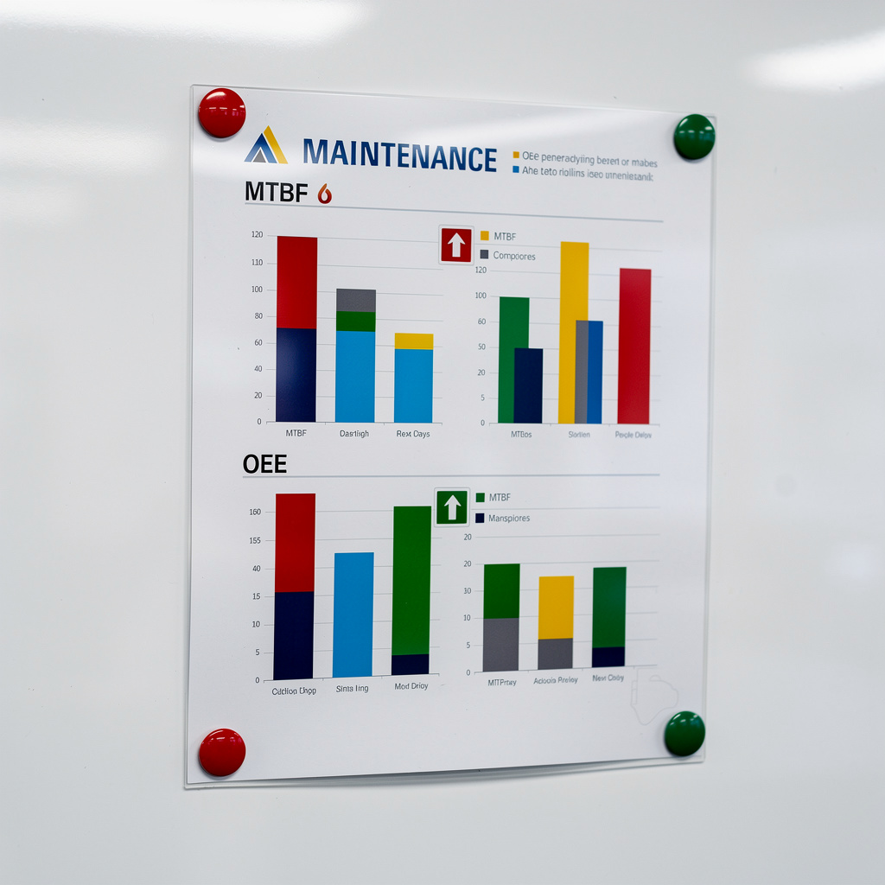
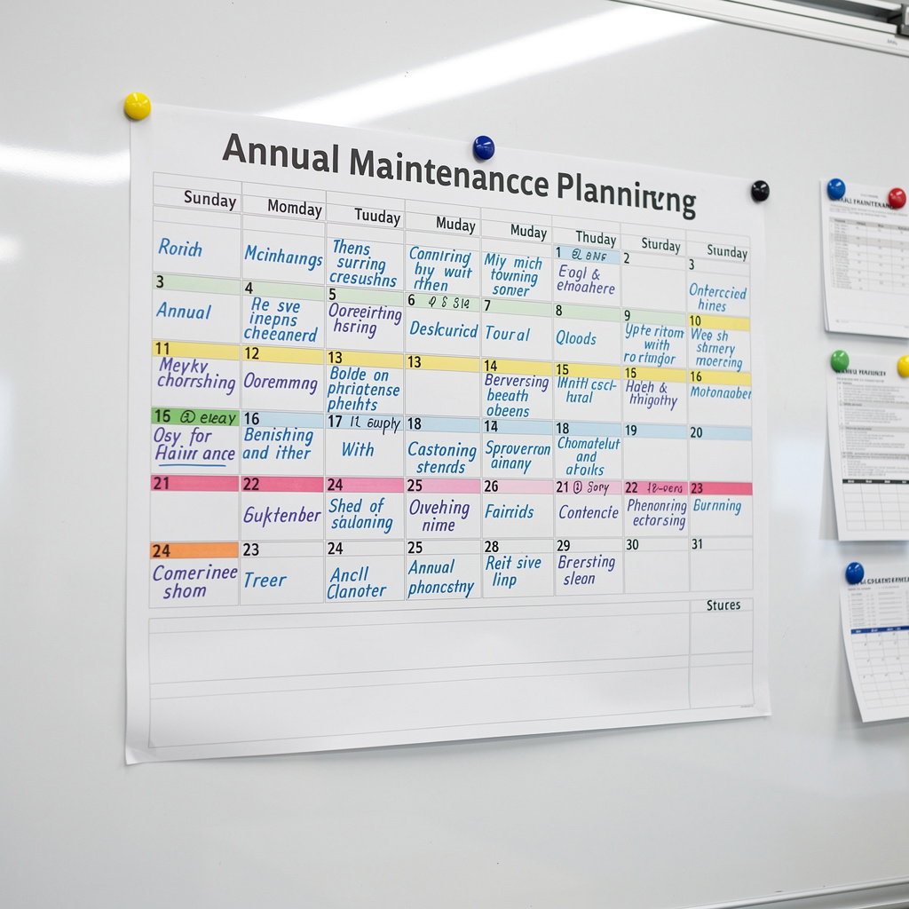

Planification maintenance annuelle & pilotage GMAO
// Le Problème
État initial : Taux de réalisation préventif 68 % (233 OT réalisés sur 342 planifiés). Arrêts imprévus = 23 % du temps de production. Coût maintenance +12 % vs budget. MTBF site 420 h (benchmark industrie connectique ~650 h).
// Diagnostic
Analyse GMAO + supervision 12 mois : 109 ordres de travail reportés. Causes Pareto : 45 % conflit production, 30 % pièces indisponibles (délai 5–7 j), 15 % sous-traitant indisponible.
Classification : absente. Tous équipements traités avec la même priorité — le compresseur d'air 8 bar critique et un éclairage de bureau ont le même préventif.
MTBF par famille : presses injection 380 h (faible), bancs test 620 h (moyen), utilités 850 h (bon). Aucun plan d'action ciblé sur les presses.



// Plan d'action 12 mois
// Résultat mesuré (année N+1)
Taux de réalisation préventif : 68 % → 94 % (objectif groupe 90 % dépassé). Arrêts imprévus –28 % (production gagne ~340 h/an de disponibilité). MTBF : 420 → 610 h (+45 %). Coûts : –15 % sous-traitance, –8 % pièces. 3 projets amélioration ROI < 18 mois.